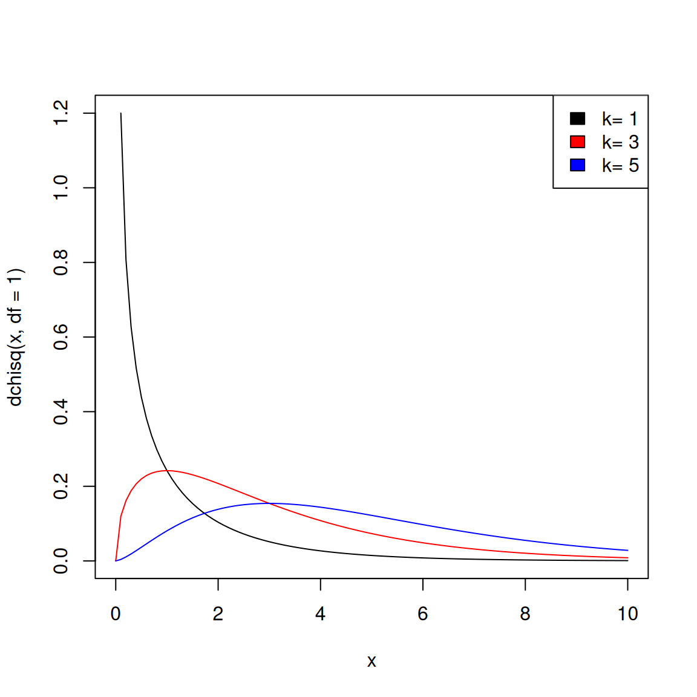

Likelihood Ratio Test and Neyman-Pearson Lemma
We have gone through many examples of how to construct a hypothesis test from a given test statistic \(T\). We’re now going to discuss how to choose \(T\). What makes for a good test statistic?
Simple alternative hypothesis
Introduction to the likelihood ratio
Suppose, I have two types of coins, some that have probability of heads \(\pi=0.5\), and others with \(\pi=0.7\). I am given one of the two coins. How can I decide if it is one of the fair coins or not? In terms of hypotheses, we can write this as \[ H_0: \pi = 0.5 \text{ vs }H_a: \pi=0.7 \] In this particular setting of comparing between two alternatives, how might I define a test statistic? Well, I might take advantage of the fact that I have a specific alternative I am considering, and define my test statistic accordingly.
Suppose I toss the coin ten times and count the number of heads \(X\). The following table gives the probabilities of each outcome:
| # Heads | 0 | 1 | 2 | 3 | 4 | 5 | 6 | 7 | 8 | 9 | 10 |
|---|---|---|---|---|---|---|---|---|---|---|---|
| \(\pi=0.5\) | 0.0010 | 0.0098 | 0.0439 | 0.1172 | 0.2051 | 0.2461 | 0.2051 | 0.1172 | 0.0439 | 0.0098 | 0.0010 |
| \(\pi=0.7\) | 0.0000 | 0.0001 | 0.0014 | 0.0090 | 0.0368 | 0.1029 | 0.2001 | 0.2668 | 0.2335 | 0.1211 | 0.0282 |
What would you do if \(X=3\)? \(X=6\)? \(X=8\)? We could explicitly compare the two hypotheses using the (Simple) Likelihood Ratio, which is \[ T=\frac{P_{H_a}(X=x)}{P_{H_0}(X=x)} \] This ratio compares how likely the observed data is under the null hypothesis (\(\pi=0.5\)) versus the alternative hypothesis (\(\pi=0.7\)). Let’s look at this ratio for the three values of \(X\) listed above:
For \(X = 3\): \[ \frac{P_{H_a}(X=3)}{P_{H_0}(X=3)} = \frac{0.0090}{0.1172} \approx 0.077 \] We see that the data seems to be approximately 13 times more likely under the null than the alternative. This provides strong evidence in favor of \(H_0\).
For \(X = 6\): \[ \frac{P_{H_a}(X=6)}{P_{H_0}(X=6)} = \frac{0.2001}{0.2051} \approx 0.98 \] In this case, the likelihoods are nearly identical. In this case it is hard to distinguish between a fair coin and this specific biased coin, so we might, given the asymmetry of the role of the null and the alternative, decide that the coin is fair.
For \(X = 8\): \[ \frac{P_{H_a}(X=8)}{P_{H_0}(X=8)} = \frac{0.2335}{0.0439} \approx 5.31 \] In this case, we see that the ratio is quite large, meaning the data is much more likely under the alternative hypothesis.
Note
Notice how this is different from our earlier coin example. Now I am comparing against a specific alternative, and so only large values of \(X\) are evidence against my null. So there is a 1-1 relationship between the likelihood ratio and number of heads, so I can make my probability calculations using either.
Likelihood ratio is a test statistic
It’s important to note that the likelihood ratio, despite calculating probabilities under the null and the alternative, is a statistic of the data, i.e. it is random and depends on the data. Thus it will have a sampling distribution. Even though a likelihood ratio of \(5.31\) tells us that this data is more likely under the alternative, it’s not an impossible result even if the null was true. It just requires that we get 8 head flips out of 10, which we’ve already seen that even with a fair coin has a probability of \(P(X=8)=0.0439.\) That’s not a large probability, but it’s certainly far from impossible.
In particular, we can calculate the probability of different values of the likelihood ratio if the null is true. It can be a test statistic for a hypothesis test, and I can find p-values for it, \[\text{p-value}=P_{H_0}(T\geq t_{obs})=P_{H_0}(X\geq x_{obs})=1-P_{H_0}(X\leq x_{obs}-1)\] (because of discreteness of \(X\)). For example, if we observe \(x_{obs}=10\), this is \(\mathtt{1-pbinom(9,size=10,prob=0.5)}=0.001\).
| Number of Heads (\(x\)) | Likelihood Ratio \(\frac{P_{H_a}(x)}{P_{H_0}(x)}\) | p-value | Evidence Direction |
|---|---|---|---|
| 0 | 0.006 | 1.000 | Strongly favors \(H_0\) |
| 1 | 0.014 | 0.999 | Strongly favors \(H_0\) |
| 2 | 0.033 | 0.989 | Favors \(H_0\) |
| 3 | 0.077 | 0.945 | Favors \(H_0\) |
| 4 | 0.179 | 0.828 | Weakly favors \(H_0\) |
| 5 | 0.418 | 0.623 | Weakly favors \(H_0\) |
| 6 | 0.976 | 0.377 | Nearly neutral (\(H_0 \approx H_a\)) |
| 7 | 2.277 | 0.172 | Weakly favors \(H_a\) |
| 8 | 5.313 | 0.055 | Favors \(H_a\) |
| 9 | 12.397 | 0.011 | Strongly favors \(H_a\) |
| 10 | 28.925 | 0.001 | Strongly favors \(H_a\) |
Note
This can feel very strange – I’ve already calculated probabilities of the data under the two hypotheses, and now I’m going to calculate the distribution under the null? But again, we are just using information about the null and our possible alternative to define a reasonable test statistic. It’s still based on our data and random and therefore has a probability distribution.
Likelihood Ratio for Continuous Distributions
The above calculation uses the probability of events because we were dealing with discrete random variables. But more generally, we can use the ratio of the likelihood of our data, just like with MLE. \[T(X) = \frac{\ell(\theta_1)}{\ell(\theta_0)} = \frac{f(X_1,...,X_n; \theta_1)}{f(X_1,...,X_n; \theta_0)}=\frac{f_a(X_1,...,X_n)}{f_0(X_1,\ldots,X_n)}\] where \(f_0\) and \(f_a\) are the densities of the data under the null and alternative, respectively.
Test of a Normal mean
So for example, suppose we assume our data is normally distributed, with a known variance \(\sigma^2\) (this is a toy example, since this never happens in practice, but an unknown variance becomes more complicated). Then we could have the following hypotheses: \[H_0:\mu=\mu_0=1 \text{ versus }H_a: \mu=\mu_1=4,\] Since we are assuming our data is i.i.d. normal \(N(\mu, \sigma^2)\), we would have \[T(X) = \frac{\ell(4)}{\ell(1)} = \frac{f_a(X_1,\ldots,X_n)}{f_0(X_1,\ldots,X_n)}\]
\[ \begin{aligned} T(X)&= \frac{\prod_i \exp\{-(X_i-\mu_1)^2/2\sigma^2\}}{\prod_i \exp\{-(X_i-\mu_0)^2/2\sigma^2\}}\\ & = \exp\left\{\frac{1}{2\sigma^2}\sum_i \left[(X_i-\mu_0)^2-(X_i-\mu_1)^2\right]\right\}\\ &= \exp\left\{ \frac{1}{2\sigma^2}\sum_i \left[2X_i(\mu_1-\mu_0) -(\mu_1^2-\mu_0^2)\right]\right\}\\ &= \exp\left\{\frac{n(\mu_1-\mu_0)}{2\sigma^2}\left[2\bar{X}-(\mu_0+\mu_1)\right]\right\}\\ &= \exp\left\{\frac{3n}{2\sigma^2}\left[2\bar{X}-5\right]\right\}\\ &= h(\bar{X}) \end{aligned} \] where \(h(y)=\exp\left\{\frac{n(\mu_1-\mu_0)}{2\sigma^2}\left[2y-(\mu_0+\mu_1)\right]\right\}\).
We can calculate p-values for this test statistic as, \[P_{\mu=1}(T(X)\geq t_{obs})=P_{\mu=1}\left(\exp\left\{\frac{3n}{2\sigma^2}\left[2\bar{X}-5\right]\right\}\geq t_{obs}\right)\] And since \(\mu_1>\mu_0\), \(h\) is an increasing, invertible function, \[h^{-1}(u)=\frac{\mu_0+\mu_1}{2}+\frac{\sigma^2\log(u)}{n (\mu_1-\mu_0)},\] So we have \[P_{\mu=1}(\bar{X}\geq h^{-1}(t_{obs}))=P_{\mu=1}\left(\bar{X}\geq \frac{\mu_0+\mu_1}{2}+\frac{\sigma^2\log(t_{obs})}{n (\mu_1-\mu_0)}\right)\] We can use the fact that if \(X_i\) are normal then under the null \(\mu=\mu_0=1\), we have \[\frac{\bar{X}-\mu_0}{\sigma/\sqrt{n}}\sim N(0,1)\] to get \[\text{p-value}=P\left(Z\geq \frac{h^{-1}(t_{obs})-\mu_0}{\sigma/\sqrt{n}}\right)=1-\Phi\left(\frac{h^{-1}(t_{obs})-\mu_0}{\sigma/\sqrt{n}}\right),\] where \(Z\sim N(0,1)\) and \(\Phi\) is the CDF of the \(N(0,1)\).
Monotone Transformations
Notice how again we can work with monotone transformations – we basically found our values for a test statistic \[\tilde{T}(X)=\bar{X}>\tilde{c},\] and then used the fact that \(\bar{X}=h^{-1}(T(X))\) to find values \(c\) for our original \(T(X)\). Because of this, these two tests (one based on \(\bar{X}\) versus one based on \(T(X)\)) are actually equivalent, in the sense that we would always make the same decision between the two tests (where \(c=h(\tilde{c})\)): \[\begin{gathered} \{T(X)>c\} \\ \Leftrightarrow \\ \{h(\bar{X}) > h(\mu_0+z_{\alpha}\sigma/\sqrt{n})\}\\ \Leftrightarrow \\ \{\bar{X}>\mu_0+z_{\alpha}\sigma/\sqrt{n}\} \end{gathered}\] Monotone invertible transformations of our test statistic \(T(X)\) therefore give equivalent tests (with properly adjusted cutoff values).
We will see with likelihood ratio tests, we often find they are equivalent to working with an (easier) test-statistic.
Optimality of the likelihood ratio
Theorem 1 (Neyman-Pearson Theorem) Suppose we test \(H_0: \theta = \theta_0\) vs \(H_a: \theta = \theta_1\).
Let \[T(X) = \frac{\ell(\theta_1)}{\ell(\theta_0)} = \frac{f_a(X)}{f_0(X)}.\] Suppose we reject \(H_0\) when \(T>c>0\), i.e. \[\begin{cases} \text{Reject }H_0 & \text{if } \frac{f_a(X)}{f_0(X)}>c\\ \text{Do not reject }H_0 & \text{if } \frac{f_a(X)}{f_0(X)}\leq c \end{cases} \]
If we choose \(c\) so that \(P_{H_0}(T>c) = \alpha\), then this test is the most powerful, size \(\alpha\) test. That is, among all tests with size \(\alpha\), this test maximizes the power, \(P_{H_a}(\text{Reject }H_0)\).
Proof. Let \[D(X)=\begin{cases} 1 & \text{if }\text{Reject }H_0\\ 0 &\text{Do not reject }H_0 \end{cases}=\begin{cases} 1 & \text{if } f_a(X)>cf_0(X)\\ 0 &f_a(X)\leq cf_0(X) \end{cases} \] This is a Bernoulli random variable and the significance level of the test is \[\alpha=P_{H_0}(D(X)=1)=E_{H_0}(D(X))\] while the power is \[P_{H_a}(D(X)=1)=E_{H_a}(D(X))\]
Suppose there was another \(\alpha\)-level significance test \(D^*(X)\). This would mean that \[P_{H_0}(D^*(X)=1)\leq P_{H_0}(D(X)=1)=\alpha.\] Then we want to show that then this will mean that \[P_{H_a}(D^*(X)=1)\leq P_{H_a}(D(X)=1),\] which is equivalent to showing that \[E_{H_a}(D^*(X))\leq E_{H_a}(D(X))\]
Note that by the definition of our decision rule \(D(X)\), we have \[ \begin{cases} f_a(X)-cf_0(X)>0 &\text{if }D(X)=1\\ f_a(X)-cf_0(X)\leq 0 &\text{if }D(X)=0 \end{cases} \] This means that for any \(x\) \[\begin{equation} D^*(x)[f_a(x)-cf_0(x)]\leq D(x)[f_a(x)-cf_0(x)] \end{equation}\] Why? If \(D^*(x)=D(x)\), then clearly we get “=”. If \(D^*(x)=0\), but \(D(x)=1\), then we have \(f_a(x)-cf_0(x)>0\), so we get \(<\), and if \(D^*(x)=1\), but \(D(x)=0\), then we get that the left hand side is non-positive (and the right hand side is \(0\)), so again \(\leq\).
This identity is key, because we can integrate both sides with respect to \(x\) and because of the presence of the densities, these integrations will turn into expectations, \[ \begin{gathered} \int D^*(x)f_a(x)dx - c\int D^*(x)f_0(x)dx \leq \int D(x)f_a(x)dx - c\int D(x)f_0(x)dx\\ \Rightarrow E_{H_a}(D^*(X)) - cE_{H_0}(D^*(X)) \leq E_{H_a}(D(X)) - cE_{H_0}(D(X))\\ \Rightarrow 0 \leq c\left[E_{H_0}(D(X)) - E_{H_0}(D^*(X))\right]\leq E_{H_a}(D(X)) -E_{H_a}(D^*(X)) \end{gathered} \] where the first inequality holds because \(c>0\) and \(E_{H_0}(D^*(X))\leq \alpha=E_{H_0}(D(X))\), and the second inequality comes from rearranging the line above.
Therefore \[E_{H_a}(D^*(X))\leq E_{H_a}(D(X)).\] so the power of \(D\) is at least as large as that of \(D^*\).
Notice, this still works if the densities are pmf and you replace the integral with summation.1
Likelihood Ratio Test (LRT)
Setup: composite nulls
The above was based on a simple versus simple hypothesis. The full likelihood ratio test expands this idea to deal with a composite alternative and a composite null. We let the space of possible null values of the parameter \(\theta\) be the set \(\omega_0\) and the space of possible alternative values of the parameter \(\theta\) be \(\omega_a\). And let \[\Omega=\omega_0 \cup \omega_a\] be the union, i.e. the entire hypothesis space. Then we can write our hypotheses as \[H_0: \theta\in \omega_0 \text{ vs } H_a:\theta\in\omega_a.\] For example, we could have \[\omega_0=\{\theta: \theta=\theta_0\} \text{ versus }\omega_a=\{\theta: \theta\neq\theta_0\},\] and this would then be equivalent to \[H_0: \theta=\theta_0, H_a: \theta\neq \theta_0\]
Or, in a two-sample problem with \(\theta=(\mu_X,\mu_Y)\), \[\omega_0=\{(\mu_X,\mu_Y):\mu_X=\mu_Y\} \text{ versus } \omega_a=\{(\mu_X,\mu_Y):\mu_X\neq\mu_Y\}, \] which is equivalent to \[H_0: \mu_X=\mu_Y, H_a: \mu_X\neq\mu_Y\]
Defining the Likelihood Ratio Statistic
The Likelihood Ratio Test is based on a direct extension of the (simple) likelihood-ratio statistic in the NP Lemma to account for a composite alternative hypothesis. This results in the likelihood ratio statistic and the likelihood ratio test (LRT).
Definition 1 (Likelihood Ratio Statistic) Let \[\Lambda(X) = 2\log\frac{\sup_{\theta \in \Omega}\ell(\theta)}{\sup_{\theta \in \omega_0}\ell(\theta)}=2[\sup_{\theta \in \Omega}L(\theta) - \sup_{\theta \in \omega_0}L(\theta)]\] where \(\ell(\theta)\) is the likelihood and \(L(\theta)\) is the log-likelihood.
\(\Lambda(X)\) is the likelihood ratio statistic.2
Relationship to MLE
Calculating \(\Lambda\) has direct connections to finding the MLE. If \(\hat\theta\) is the MLE then it maximizes \(L(\theta)\) and \(\sup_{\theta \in \Omega}L(\theta)=L(\hat\theta)\), \[ \Lambda(X) = 2\log\frac{\ell(\hat\theta)}{\sup_{\theta \in \omega_0}\ell(\theta)} \] So we then just need to find the value that maximizes \(\ell(\theta)\) when \(\theta\) is restricted to \(\omega_0\), call it \(\hat\theta_{0}\). Then we have
\[ \Lambda(X) = 2\log\frac{\ell(\hat\theta)}{\ell(\hat\theta_{0})}=2 (L(\hat\theta)-L(\hat\theta_0)) \] Thus calculating \(\Lambda(X)\) generally has the following steps:
- Find the MLE \(\hat{\theta}\) that maximizes \(L(\theta)\)
- Find the value \(\hat\theta_{0}\) that maximizes \(L(\theta)\) when \(\theta\) is restricted to \(\omega_0\).
- Return the value \(\Lambda(X) = 2 [L(\hat\theta)-L(\hat\theta_0)]\)
Examples
Poisson
Suppose we have count data \(X_1,\ldots,X_n\) that we assume are i.i.d. \(Poisson(\theta)\). For testing \(H_0: \theta = \theta_0\) versus \(H_a:\theta \neq \theta_0\), we have the MLE for \(\theta\) is \[\hat\theta = \sum_{i=1}^n X_i / n=\bar{X}\] And under the null, we just have one value \(\theta_0\). So we have,
\[\begin{aligned} \Lambda(X) &= 2 \log \frac{\ell(\hat\theta)}{\ell(\theta_0)}\\ &= 2 \log \frac{e^{-n\hat\theta}\hat\theta^{\sum x_i}}{e^{-n\theta_0}\theta_0^{\sum x_i}}\\ &= 2n[(\theta_0-\hat\theta) - \hat\theta \log (\theta_0/\hat\theta)] \end{aligned}\]
Normal with known \(\sigma^2\)
Suppose we assume \(X_1,\ldots,X_n \stackrel{iid}{\sim} N(\theta, 1)\), i.e. we know the variance \(\sigma^2=1\). Consider testing \(H_0: \theta = \theta_0\) versus \(H_a: \theta \neq \theta_0\). The likelihood is \[\ell(\theta)=c_n \exp\{\sum_i -\frac{1}{2}(X_i-\theta)^2\}\] Then we know that the MLE is \(\hat\theta=\bar{X}\), and the MLE restricted to \(\omega_0=\{\theta_0\}\) is just \(\hat\theta_{0}=\theta_0\) because there’s only one possible value in the null hypothesis space.
Then \[ \begin{aligned} \Lambda(X)&=2\log\frac{\exp\{\sum_i -\frac{1}{2}(X_i-\bar{X})^2\}}{\exp\{\sum_i -\frac{1}{2}(X_i-\theta_0)^2\}}\\&=\sum_i \left[(X_i-\theta_0)^2-(X_i-\bar{X})^2\right]\\ &=n (\bar{X}-\theta_0)^2 \end{aligned}\]
Normal with unknown \(\sigma^2\)
What if we’re more realistic and while we still assume \(X_i\) i.i.d. \(N(\mu,\sigma^2)\), we don’t assume we know \(\sigma^2\). We again consider testing \(H_0: \mu=\mu_0\). \[L(\theta)= -\frac{n}{2}\log(2\pi)-\frac{n}{2}\log(\sigma^2)-\frac{1}{2\sigma^2}\sum_i(X_i-\mu)^2\]
Now we have to consider our full set of parameters, \(\theta=(\mu,\sigma^2)\), even though we are only testing something about the \(\mu\).
We have the MLEs \[\hat\mu=\bar{X}, \hat\sigma^2=\frac{1}{n}\sum_i (X_i-\bar{X})^2\] so plugging those into \(L(\theta)\) above will give us \(L(\hat\theta)\), the maximum value of \(L(\theta)\).
What about maximizing \(L(\theta)\) over the null? We are only constraining \(\mu=\mu_0\), but \(\sigma^2\) can be anything. So we have to find the maximum value of the likelihood over all \(\sigma^2\) values, even though there’s only one value of \(\mu\). So we have \[L(\theta)=-\frac{n}{2}\log(2\pi)-\frac{n}{2}\log(\sigma^2) -\frac{1}{2\sigma^2}\sum_i (X_i-\mu_0)^2\] Maximizing with respect to \(\sigma^2\) we have \[\hat\sigma_0^2=\frac{1}{n}\sum_i (X_i-\mu_0)^2\] This makes sense: if I know the mean of the data is \(\mu_0\) I will use that value to estimate the variance.
Putting these together gets me the (log)-likelihood ratio statistic, \[\begin{align*} \Lambda(X)&=2[L(\hat\theta)-L(\hat\theta_{0})]\\ &=n\log\left(\frac{\hat\sigma_{0}^2}{\hat\sigma^2}\right) +\frac{1}{\hat\sigma_{0}^2}\sum_i(X_i-\mu_0)^2 -\frac{1}{\hat\sigma^2}\sum_i(X_i-\bar{X})^2\\ &= n\log\left(\frac{\hat\sigma_{0}^2}{\hat\sigma^2}\right)\\ &=n(\log(\sum_i (X_i-\mu_0)^2 )-\log(\sum_i (X_i-\bar{X})^2)) \end{align*}\]
Connection to NP Lemma
For the NP Lemma, we had simple \(\omega_a=\{\theta_1\}\) and \(\omega_0=\{\theta_0\}\). We could rewrite the statistic from the NP Lemma in a similar form as \(\Lambda(X)\) \[T(X)= \frac{\ell(\theta_1)}{\ell(\theta_0)}= \frac{\sup_{\theta \in \omega_a}\ell(\theta)}{\sup_{\theta \in \omega_0}\ell(\theta)}\] As we’ve noted, taking the \(\log\) and multiplying by \(2\) result in equivalent tests since these are monotone transformations, so that is not a meaningful distinction between \(T(X)\) and \(\Lambda(X)\).
But what has changed is that the numerator of the LRT \(\Lambda(X)\) is over \(\Omega\), the entire parameter space (the union of \(\omega_a\) and \(\omega_0\)) \[\Lambda(X) = 2\log\frac{\sup_{\theta \in \Omega}\ell(\theta)}{\sup_{\theta \in \omega_0}\ell(\theta)}\] So we are not exactly expanding the original test statistic \(T(X)\) of the NP lemma – we have changed it. But notice, \[\begin{aligned} \Lambda(X)&=\begin{cases}2\log (1)=0 & \text{if }\sup_{\theta \in \Omega}\ell(\theta)=\sup_{\theta \in \omega_0}\ell(\theta)\\ 2\log \frac{\sup_{\theta \in \omega_a}\ell(\theta)}{\sup_{\theta \in \omega_0}\ell(\theta)}=2\log[T(X)] & \text{otherwise} \end{cases}\\ &=\begin{cases}0 & \text{if }T(X)\leq 1\\ 2\log[T(X)] & \text{if }T(X)> 1 \end{cases} \end{aligned} \] So the main difference is that \(\Lambda(X)\) is ignoring the value of the ratio of the likelihood in cases where there is less likelihood of the data in \(\omega_a\) than in \(\omega_0\). It’s basically not interested in how much more likely the null is than the alternative, once it’s clear the data prefers the null.
Note this also shows that \(\Lambda(X)\geq 0\).
Finally, notice that unlike \(T(X)\), we only have to do one constrained likelihood (for \(\theta\in\omega_0\)); constrained optimization is harder than unconstrained optimization in general. And furthermore, if \(\omega_0=\{\theta_0\}\) is a simple hypothesis, we have no optimization in the denominator, and only need to find the standard MLE, which we will probably have done anyway.
LRT & Determining the critical value
Definition 2 (Likelihood Ratio Test (LRT)) A likelihood ratio test is a test for which \[ R = \{x: \Lambda(x) > c\}\] where \(c\) is found so that the level of the test is \(\alpha\)
To define a test based on \(\Lambda(X)\) requires finding the critical value \(c\) for our cutoff.
Sometimes we can calculate the power function for the LRT exactly to find \(c\); or equivalently, we can find a simplified expression for the form of the rejection region, i.e. another formulation of \(\Lambda(X)\) that is more tractable.
Example of exact sampling distribution of \(\Lambda\)
Let’s return to our example where we assumed our data is \(X_i\stackrel{iid}{\sim} N(\theta,1)\). We found \(\Lambda(X)= n(\bar{X}-\theta_0)^2\). We can determine the exact value of \(c\) for a particular \(\alpha\) based on knowing the distribution of \(\bar{X}\): \[\begin{gathered} n(\bar{X}-\theta_0)^2 > c\\ \Leftrightarrow\\ |\bar{X}-\theta_0| > \underbrace{\sqrt{\frac{c}{n}}}_{d} \end{gathered}\] So an equivalent test is to reject for \(|\bar{X}-\theta_0|> d=d(c)\). We’ve done this type of calculation already!
To find the cutoff we find \(d\) so that, under the null, the probability of rejecting is \(\alpha\), \[ \begin{aligned} \alpha=P_{\theta_0}(\text{Reject }H_0)&=P_{\theta_0}(|\bar{X} -\theta_0|> d)\\ &=1-P_{\theta_0}(- d\leq\bar{X} -\theta_0 \leq d)\\ &=1-P_{\theta_0}\left(- \frac{d}{1/\sqrt{n}}\leq\frac{\bar{X} -\theta_0}{1/\sqrt{n}} \leq \frac{d}{1/\sqrt{n}}\right) \end{aligned} \] Under the null, \(\frac{\bar{X} -\theta_0}{1/\sqrt{n}}\sim N(0,1)\), so \(\sqrt{n}d\) must be the \(1-\alpha/2\) quantile of the \(N(0,1)\).
This gives a cutoff for \(|\bar{X}-\theta_0|\) of \(d=z_{\alpha/2}/\sqrt{n}\).
Or in terms of \(\Lambda(X)\), we reject when \(\Lambda(X)=n(\bar{X}-\theta_0)^2> nd^2=z_{\alpha/2}^2\).
Asymptotic LRT and \(\chi^2_k\) Distribution
Often we cannot find the exact distribution of \(\Lambda(X)\). In this case, if we had the asymptotic distribution of \(\Lambda(X)\), then we’ve seen that we can use this to find \(c\) and define an asymptotic test.
In fact, for certain hypothesis tests, \(\Lambda(X)\) follows what is known as the \(\chi^2_k\) Distribution.
Definition 3 (\(\chi^2_k\) Distribution) The \(\chi^2_k\) distribution (read “chi squared with \(k\) degrees of freedom”) is the distribution of the sum of squares of \(k\) independent standard normal random variables.3 That is, if \(Z_1,\ldots,Z_k \stackrel{iid}{\sim} N(0, 1)\), then \[ Y = \sum_{i=1}^k Z_i^2 \sim \chi^2_k \]
Theorem 2 Under smoothness conditions on the probability densities, we have that under \(H_0\), the limiting distribution \[ \Lambda(X) \stackrel{D}{\rightarrow} \chi^2_{r} \] where \[r=dim(\Omega)-dim(\omega_0)\]
We can use this approximation to find an appropriate critical value \(c\) for \(\Lambda(X)\). Since for large \(n\), \(\Lambda(X) \stackrel{D}{\approx} \chi^2_{r}\), to construct an approximate size \(\alpha\) LRT, we find \(c_{\alpha}\) s.t. \[P_{H_0}(\Lambda(X) > c_{\alpha}) = \alpha,\] or equivalently \[P_{H_0}(\Lambda(X) \leq c_{\alpha}) = 1-\alpha.\] This means we want \(c_{\alpha}\) to be the \(1-\alpha\) quantile of the \(\chi^2_{r}\) distribution.
Note
What does it mean “the dimension of \(\omega_0\)”? This is the dimension of subspace that \(\theta\) lies on, after the constraints of the null hypothesis are satisfied.
Examples
Let’s go back to our previous examples and consider the limiting distribution of \(\Lambda\)
Example (Poisson):
We had that
\[\begin{aligned} \Lambda(X) &= 2n[(\theta_0-\hat\theta) - \hat\theta \log (\theta_0/\hat\theta)] \end{aligned}\]
Our theorem tells us this will be asymptotically \(\chi^2_r\), and we just need to figure out the degrees of freedom \(r\). In this case, the unrestricted parameter \(\theta\) lies in \(\mathbb{R}\), so \(dim(\Omega)=1\). The restricted parameter \(\theta\) is just a point, so it lies in a space of dimension \(dim(\omega_0)=0\). So \(r=1\).
Then to find \(c_{\alpha}\), we need \(c_{\alpha}\) to satisfy \[P(\chi^2_{1} \leq c_{\alpha}) = 1-\alpha,\] i.e. the \(1-\alpha\) quantile of the \(\chi^2_{1}\) distribution. For \(\alpha=0.05\),
qchisq(.95,df=1)[1] 3.841459Alternatively, we could calculate a p-value based on the \(\chi^2_1\) distribution, \[\text{p-value}\approx P(\chi^2_1 \geq \Lambda_{obs})=\mathtt{1-pchisq(lobs,df=1)}\]
Example: Normal, variance unknown
We found above that \[\begin{aligned} \Lambda(X)&=n\left(\log\left(\sum_i (X_i-\mu_0)^2 \right)-\log\left(\sum_i (X_i-\bar{X})^2\right)\right) \end{aligned}.\]
Here \(\theta=(\theta_1,\theta_2)=(\mu,\sigma^2)\in \mathbb{R}\times(0,\infty)=\Omega\), so we have \(dim(\Omega)=2\).
Then for our null hypothesis space \(\mu\) can’t vary – it’s only \(\mu_0\); only \(\sigma^2\) so \(\omega_0\) is a subspace of \(\mathbb{R}^2\) that is a line, so \(dim(\omega_0)=1\). So \(r=1\) again, and \(\Lambda(X)\) is approximately \(\chi^2_1\) under the null and has the same critical values and p-value calculations as the Poisson (but obviously a different \(\Lambda(X)\) equation).
Exercise/Question
Suppose that a fast food company has developed a new, more expensive hamburger recipe. They recruit \(n\) people to test the new and old hamburgers. For each person \(i\), let \(X_i = 1\) if he/she prefers the new hamburger and 0 otherwise. Let \(p\) denote the proportion of people in the target population (hamburger eaters) who prefer the new recipe.
- Find the form of the LRT for \(H_0: p=1/2\).
- Use the limiting \(\chi^2\) distribution of \(\Lambda\) to find the size 0.05 LRT.
- Suppose \(n = 30\) and \(\sum_i X_i = 22\). What do you conclude?
Exercise/Question
Show that the LRT given above for testing \(H_0: \mu=\mu_0\) from \(X_i\) i.i.d. \(N(\mu,\sigma^2)\), with \(\sigma^2\) unknown is equivalent to using the test statistic \[T(X)=\frac{|\bar{X}-\mu_0|}{s/\sqrt{n}}\] where \(s\) is the sample standard deviation, with \[s^2=\frac{1}{n-1}\sum_i (X_i-\bar{X})^2\]
Hint: First show that \(\sum_i (X_i-\mu_0)^2=\sum_i (X_i-\bar{X})^2+n(\bar{X}-\mu_0)^2\)
Footnotes
However, getting an exactly \(\alpha\) level test will not be possible for all values of \(\alpha\) for a discrete random variable.↩︎
Be careful: sometimes the likelihood ratio statistic will be defined with the reciprocal of this ratio, and with a \(-2\) instead. Which means they are in fact exactly equivalent equations, but it can be confusing.↩︎
The \(\chi^2_k\) distribution is a special case of the Gamma distribution, \(Gamma(\frac{k}{2},2)\), using the shape-scale definition of the Gamma (as in Wasserman) with density \(\frac{x^{k/2-1} e^{-x/2}}{2^{k/2}\Gamma(k/2)}\) for \(x>0\).↩︎